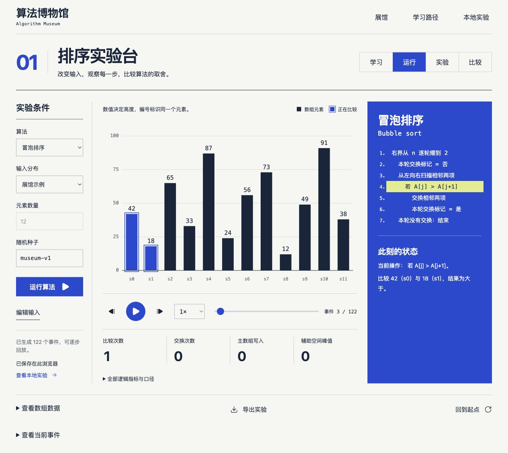
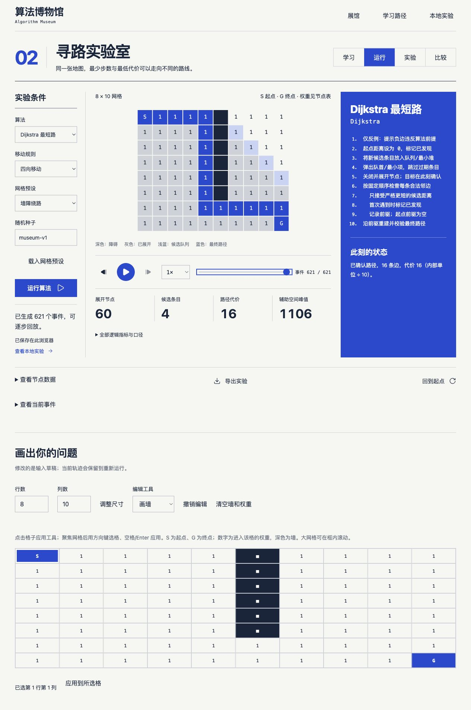
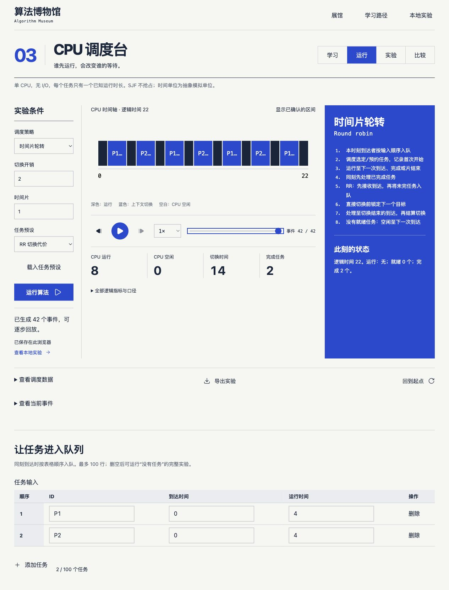

项目 / Interactive Learning · Algorithms · Visualization
算法博物馆
我想做一个可以动手的算法展馆：改一组数字、画一堵墙、调一个时间片，然后停下来，看清每一步选择是怎样改变结果的。
- 产品设计与前端工程
- 在线体验 · 持续完善
- React / TypeScript / Web Workers
- No. 05

让理解发生在动手之后
截图来自网站的实际运行，使用内置示例输入。点击图片可查看完整尺寸。
学算法时，能读懂伪代码和能解释一次具体选择，常常还差一步。我想把这一步做成可以操作的界面：先猜结果，再改条件，最后沿着执行过程检查自己的判断。排序、寻路和 CPU 调度刚好提供了三种不同的观察对象：数字的顺序、地图上的路径，以及任务占用的时间。
我给三个展品统一了“学习、运行、实验、比较”四个入口。可以从一段解释开始，也可以直接进入实验台。画面旁边放伪代码和当前步骤，下方放数据与指标；停在任何一步，都能把看到的变化和算法正在做的事对上。

追踪一个元素，而不只是一根柱子
排序实验台放了冒泡、插入、归并、快速和堆排序。我给每个元素保留独立编号，即使两个值相同，也能看出谁先谁后。这样观察稳定性就有了具体对象：把输入改成 2、1、2、1，逐步看相同数值的元素怎样移动，比只记住“稳定排序”的定义直观得多。
有序、逆序、大量重复值都可以直接载入，也能手工输入。比较时使用同一组数据，把两到三个算法并排放在一起，查看比较次数、写入和辅助空间。快速排序采用固定的末尾 pivot 版本，我也把这个前提留下来，让某种输入下的表现有据可查。

走得少，未必代价低
寻路实验室可以画墙、修改格子权重、移动起终点，再观察 BFS、Dijkstra 和 A* 如何探索。只要给一条近路加上更高的代价，“最少走几步”和“总成本最低”就可能分开。我希望使用者自己改出这个差别，再回头理解算法的适用条件。
因此，普通 BFS 遇到不满足统一边代价的地图时，会解释为什么不能运行；负边教学反例则单独标明它破坏了 Dijkstra 的前提。图形展示探索过程，节点表保留距离和前驱等状态。看不到路径时，也能分清是终点不可达，还是输入条件不适合这个算法。

谁先运行，谁在等待
CPU 调度台把 FCFS、SJF 和 RR 放到同一条时间线上。输入每个任务的到达时间和运行时长，再调节时间片与切换开销，就能看到运行、等待和空闲怎样分布。长任务先来会怎样？时间片变短，响应更快的同时会付出多少切换代价？这些问题都可以直接做实验。
这里采用单 CPU、无 I/O、运行时长已知的教学模型，SJF 不抢占。时间轴旁边保留就绪队列和任务数据，最终给出响应、等待与周转时间。我把这些简化条件写在界面上，方便把实验结论放回它成立的范围内。
把一次运行留下来
工程上，我把计算、记录和观看分开。算法在 Web Worker 中执行，生成比较、交换、节点展开或任务切换等事件；界面读取这些事件恢复状态。播放速度只改变观看节奏，后退是在查看历史，修改输入后重新运行才会产生新的实验。
- 01 / COMPUTE
固定运行条件
保存输入、种子、算法版本和参数，再交给 Worker 计算。
- 02 / REPLAY
用事件恢复状态
图形、数据表、指标与伪代码读取同一份执行记录。
- 03 / KEEP
留下可以重开的实验
运行、比较和测量保存在 IndexedDB，也可以导出文件备份。
界面用 React、TypeScript 和 Canvas 2D 组织，协议、运行时、存储与三个展品各自分包。另一个需要认真区分的是“做了多少次操作”和“这台设备用了多久”：前者来自执行记录，后者通过独立的重复测量获得。测量包含算法与事件生成的开销，遇到计时精度不足会标明不可靠，不用动画快慢替算法排名。
从改一个条件开始
现在可以直接在浏览器里体验三个展品，不需要注册。第一次打开，我建议先选一个熟悉的算法，运行默认例子，再只改一个条件。保留原来的记录，把新结果放在旁边比较，很多差别会比从头读一遍解释更容易记住。
实验保存在当前浏览器，换设备需要导出、导入文件，还没有账号或云同步。完整离线使用也仍在后续计划里，当前版本需要联网打开。我接下来想继续完善反例、教学解释和手机上的操作，让每次实验都能留下一个说得清楚的发现。